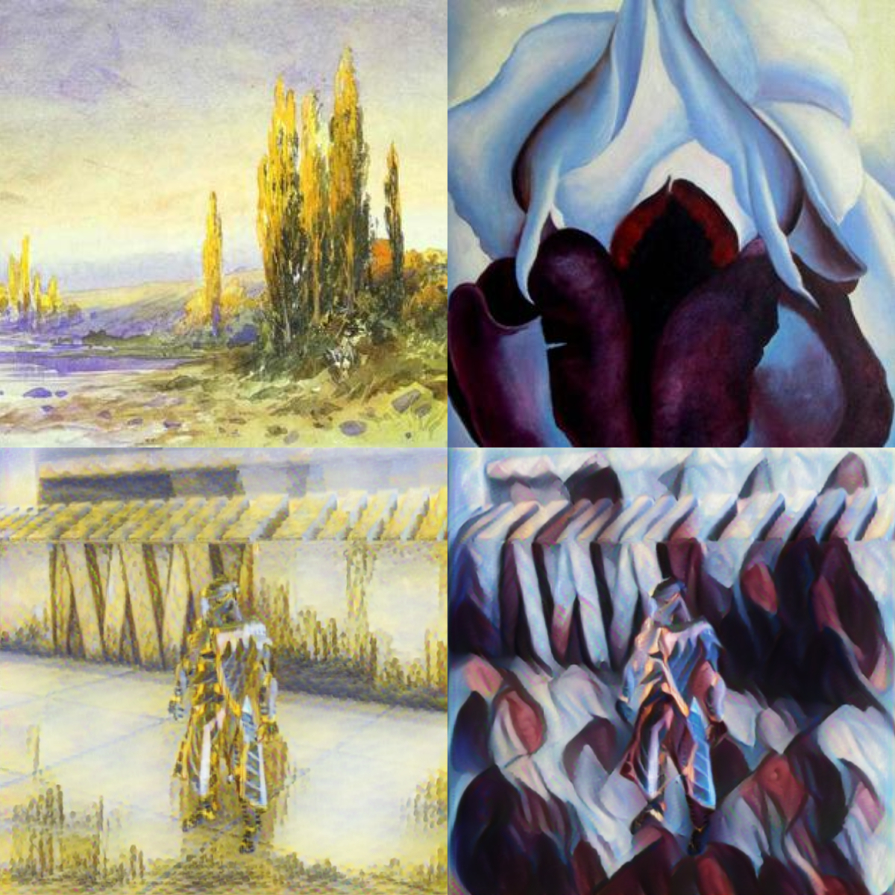

Weekly Recap
End-to-End Style Transfer Tutorial
I spent most of this week working on the in-game style transfer tutorial. I trimmed down the code for the two style transfer models that will be used. There was a decent amount of code that wasn’t needed for the video style transfer model. Hopefully that will make it a bit easier to browse through for anyone that wants to.
I also have the accompanying jupyter notebook pretty much completed. All the code is there. I just need to add the text for the tutorial.
I plan to use Google Colab for the tutorial so anyone following it won’t be required to get PyTorch running on their computer. I need to run the notebook on Colab to make sure the default compute resources are adequate.
I’m probably going to use Unity’s FPS Microgame for this tutorial. It should take less time to download and open than the Kinematica demo. I decided to go with Unity’s video recorder for capturing the training images from the target video game. That should mean that Unity is the only applications that needs be installed to complete the tutorial. Well, that and a web browser. The rest of the tutorial should be pretty similar to the basic tutorial I did previously.
I also came across an implementation of the model that Unity started with for their in-game style transfer project. It actually does such a good job applying styles that I was tempted to redo the jupyter notebook I’d just completed to use it instead.

However, it looks like it takes considerably more time to fully train than the single style models that I’m currently using. Therefore, I’ll leave the tutorial as is and probably make a separate post for using this model in the future. I still need to convert the model and training code to PyTorch anyways.
C++
I started to brush up on C++ in preparation for working with Unreal Engine and PyTorch’s C++ interface. I’m looking forward to finally using this language on something other than homework. C++ was actually the first programming language I learned but I never used it outside of class. Python was the first language I used to make stuff on my own time. It was a bit odd picking up Python initially since so much is handled automatically. I constantly felt like I was forgetting to do something.
I’d also like to see what performance gains there might be from using Nvidia’s TensorRT library. It supports ONNX models so I should be able to directly compare performance vs Barracuda. Of course I’d lose the multi-platform compatibility that Unity provides with the Barracuda library. I didn’t fully appreciate that feature until I learned that someone was following my PoseNet tutorial on a MacBook.
Links of the Week
GPT-Neo
A group of independent researchers is developing an open source, free-to-use version of OpenAI’s GPT-3 language model.
I learned about this drawing and painting software over the weekend called Clip Studio Paint. It has a lot of features to enhance and speed up creating art. One of the features that caught my eye was the ability to pose a virtual 3D human figure based on a reference image.
Making Data-Driven Essays
A three-part series designed to help familiarize people with the tools to make visual, data-driven essays created by The Pudding.